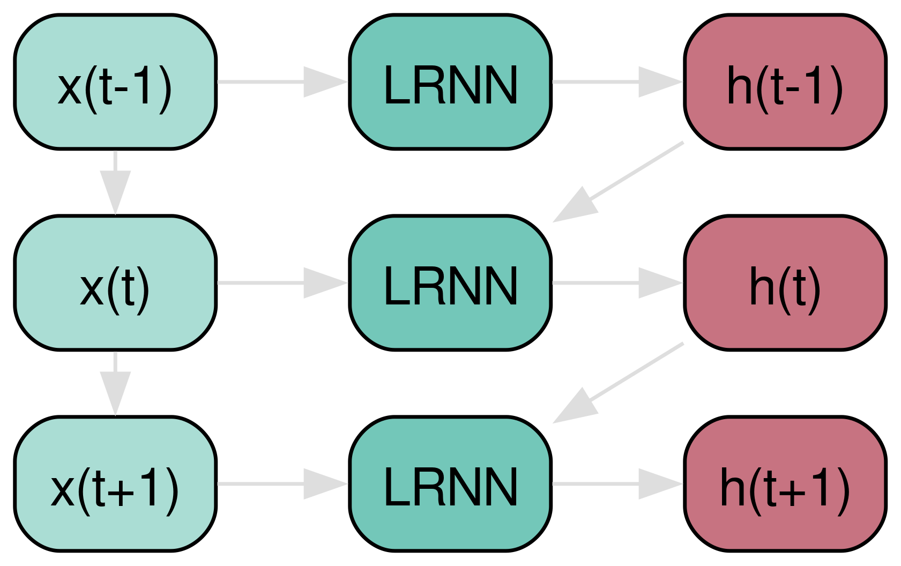
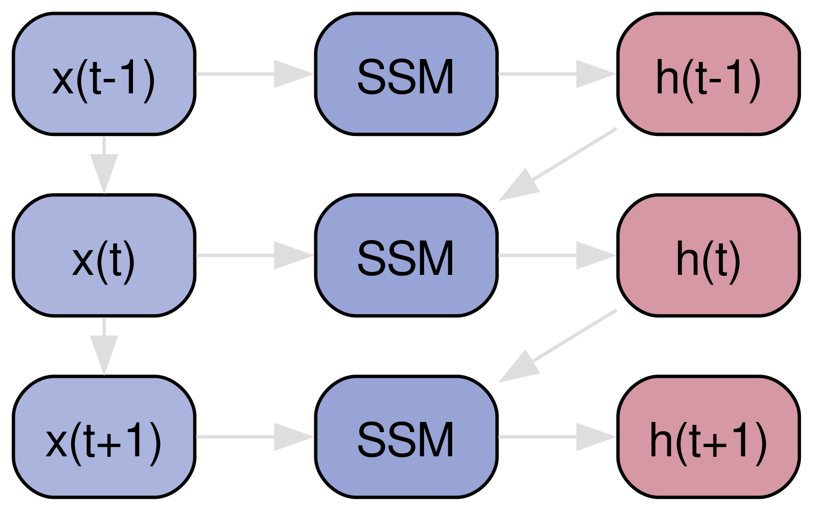
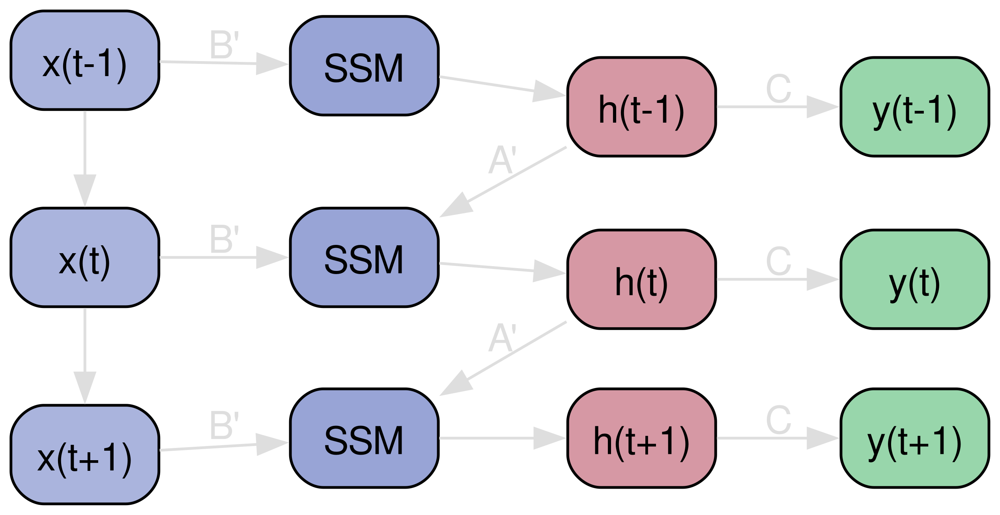
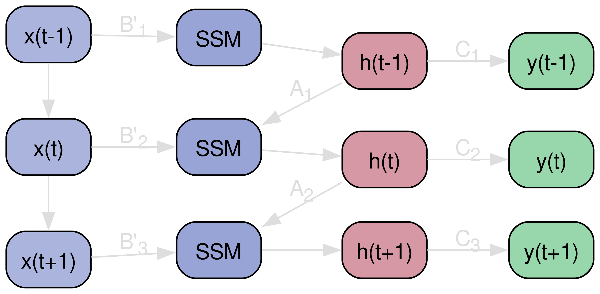
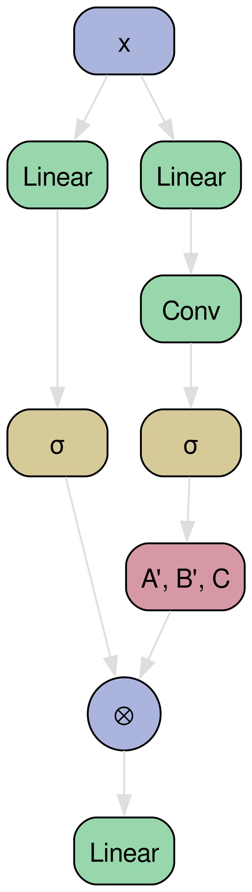
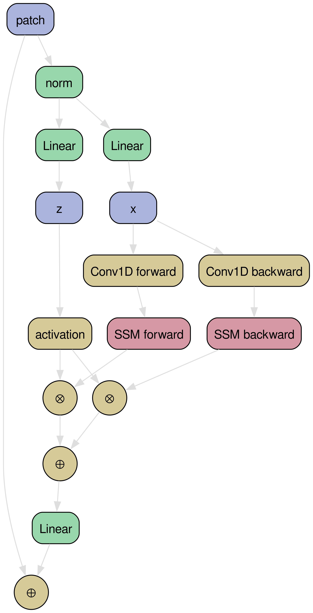

Intelligent Vision Systems
Group Meeting
2024/07/30 Winterthur
Group Meeting
2024/07/30 Winterthur
IVS Meeting Structure in HS24

Figure 1: Group meeting agenda (MS Teams CAI-IVS files)
Important Dates
- IEM Grillabend "zum Reitplatz" (RSVP per email): 4. September 2024
- DIZH Fellowship Call deadline: 23. September 2024 (at 23:59)
- AI+X Summit 2024: 3.-4. September 2024 (denp's GenAI track talk)
Proposals (submitted)
Proposals (in work)
Papers (in writing)
- certAInty: AI Assessment Tooling paper (due August 5, 2024)
- for Symposium on Scaling AI Assessments (SAIA 2024), Cologne Sept 30 - Oct 01
- SKACH:
- Galactic Alchemy I: Deep Learning Map-to-Map Generation in Hydrodynamical Simulations
- Galactic Alchemy II: TBD (Diffusion + InDI)
- Galactic Alchemy III: TBD (ViT-UNet + Mamba)
Hardware news
- August 2nd: DGX migration to the new cluster starting with DGX1
- down time?
- any must-dos after reboot?
Software news
chuchichaestli- GH workflows: merged before holidays
- problem: direct commits from
github-actions[bot]don't work
- problem: direct commits from
- GH workflows: merged before holidays
Discussion time: denp

Why are they interesting?
- Selective state-space models
- serious competitor to Transformers
- better scaling properties
Model comparison
| RNN | SSMs | Transformers | Mamba | |
|---|---|---|---|---|
| computation | O(L) | O(L) | O(L2) | O(L) |
| memory | O(1) | O(1) | O(L2) | O(L) |
| performance | ehh | meh | aah | uuh |
- Transformers are fast due to parallelism
- RNNs calculate recursively (slow)
(Linear) RNNs and LSTMs

State space models

S4: Discretization

- 4 matrices: \(\Delta\), \(A\), \(B\), \(C\)
- Discretization: \(\Delta\) \(\rightarrow\) \(A'\), \(B'\)
- \(A'=exp(\Delta A)\)
- \(B' = (\Delta A)^{-1} (exp(\Delta A) - \mathbb{1}) (\Delta B) \)
S4: Hidden states
- Hidden states: \(h_t = A'h_{t-1} + B'x_t\)
- Outputs: \(y_t = Ch_{t}\)
Discretization of ODEs
- ODEs:
\(\dot{h} = Ah + Bx\) - Hidden states:
\(h_t = A'h_{t-1} + B'x_t\) - \(\Delta\) is the discretiztation operator, i.e. "step size"
How do SSMs gain speed-up?
- SSMs behave like linear RNNs (which are parallelizable)
- \(y = Ch_t = C (A'h_{t-1} + B'x_t) = C (A'(A'h_{t-2} + B'x_{t-1}) + B'x_t) = \quad ... \)
- Introduce \(K = (CB', CA'B',\, ..., CA'^{L-1}B')\) summarization of all matrices pre-computed
- \(y = K * x\)
How do SSMs improve performance?
- Selective SSMs:
- introduce linear layers to compute different \(\Delta_t, B_t, C_t\) from the input

- Selective SSMs:
- introduce linear layers to compute different \(\Delta_t, B_t, C_t\) from the input
- But there's a problem: convolution doesn't work anymore, speed is gone!
- Gu & Dao et al. (2023) propose an alternative:
Parallel associative scans (as in all-prefix-sums)- see GPU Gems 3 and mamba-tiny in pytorch
- runs sequentially in O(n log n) time
- runs parallel in O(log n) time

Mamba block

Mamba variants
Vision Mamba
- image-patch tokenization: flatten & linear projection

References
- Mamba: Mamba
- MoE-Mamba: Mixture-of-Experts-Mamba
- MambaByte: Raw byte sequencing
- ViM: Vision Mamba
- DiM: Diffusion Mamba
- GPU Gems 3: cf. parallel prefix-sums
- mamba-tiny: cf. basic scan implementation